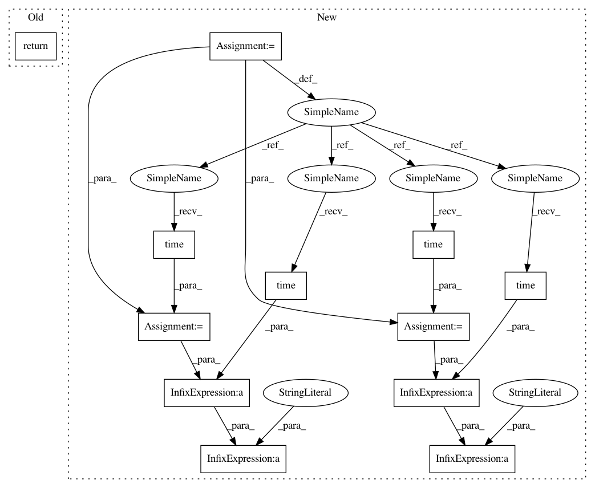

d619c4a858db04ea98b63251bfd189e74e89d9f3,deepchem/featurizers/featurize.py,DataFeaturizer,_featurize_shard,#DataFeaturizer#Any#Any#Any#Any#Any#,149
Before Change
elif isinstance(featurizer, ComplexFeaturizer):
self._featurize_complexes(df_shard, featurizer)
basename = "shard-%d" % shard_num
return write_fn((basename, df_shard))
def _shard_files_exist(self, feature_dir):
Checks if data shard files already exist.
for filename in os.listdir(feature_dir):
After Change
def _featurize_shard(self, raw_df_shard, process_fn, write_fn, shard_num, input_type):
Featurizes a shard of an input dataframe.
//////////////////////////////////////////////////////////////////////////////////////////////////////////////////////////// DEBUG
time1 = time.time()
//////////////////////////////////////////////////////////////////////////////////////////////////////////////////////////// DEBUG
log("Applying processing transformation to shard.",
self.verbosity)
raw_df_shard = raw_df_shard.apply(
process_fn, axis=1, reduce=False)
//////////////////////////////////////////////////////////////////////////////////////////////////////////////////////////// DEBUG
time2 = time.time()
print("PROCESSING TRANSFORMATION TOOK %0.3f s" % (time2-time1))
//////////////////////////////////////////////////////////////////////////////////////////////////////////////////////////// DEBUG
//////////////////////////////////////////////////////////////////////////////////////////////////////////////////////////// DEBUG
time1 = time.time()
//////////////////////////////////////////////////////////////////////////////////////////////////////////////////////////// DEBUG
log("About to standardize dataframe.")
df_shard = self._standardize_df(raw_df_shard)
//////////////////////////////////////////////////////////////////////////////////////////////////////////////////////////// DEBUG
time2 = time.time()
print("STANDARDIZATION TOOK %0.3f s" % (time2-time1))
//////////////////////////////////////////////////////////////////////////////////////////////////////////////////////////// DEBUG
field = "mol" if input_type == "sdf" else "smiles"
In pattern: SUPERPATTERN
Frequency: 3
Non-data size: 12
Instances
Project Name: deepchem/deepchem
Commit Name: d619c4a858db04ea98b63251bfd189e74e89d9f3
Time: 2016-07-16
Author: rbharath@stanford.edu
File Name: deepchem/featurizers/featurize.py
Class Name: DataFeaturizer
Method Name: _featurize_shard
Project Name: UFAL-DSG/tgen
Commit Name: c0be03672484e706c890bef199ad7db76cdaf4d2
Time: 2015-12-15
Author: odusek@ufal.mff.cuni.cz
File Name: tgen/parallel_percrank_train.py
Class Name: RankerTrainingService
Method Name: exposed_training_pass
Project Name: deepchem/deepchem
Commit Name: d619c4a858db04ea98b63251bfd189e74e89d9f3
Time: 2016-07-16
Author: rbharath@stanford.edu
File Name: deepchem/featurizers/featurize.py
Class Name: DataFeaturizer
Method Name: _featurize_shard
Project Name: deepchem/deepchem
Commit Name: d619c4a858db04ea98b63251bfd189e74e89d9f3
Time: 2016-07-16
Author: rbharath@stanford.edu
File Name: deepchem/featurizers/featurize.py
Class Name:
Method Name: featurize_map_function